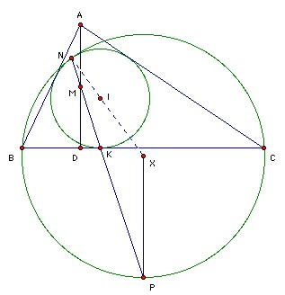

ABC is an acute-angled triangle. The incircle touches BC at K. The altitude AD has midpoint M. The line KM meets the incircle again at N. Show that the circumcircle of BCN touches the incircle of ABC at N.
Solution

If AB = AC, then D = K = midpoint of BC and the result is trivial (the figure is symmetrical about AD). So assume AB and AC are unequal. Let X be the center of the circle BNC. Take P to be the intersection of the line KN and the perpendicular bisector of BC. Suppose that P lies on the circle. Then ∠PNX = ∠NPX (XP = XN) = ∠NKI (IK parallel to XP) = ∠KNI (IN = IK) = ∠PNI (same angle), so N, I, X are collinear. But if two circles meet at a point on the line of centers, then they must touch there. So it remains to show that P lies on the circle.
Take BC = a, CA = b, AB = c, s = (a + b + c)/2 as usual. The usual argument shows that BK = s - b, CK = s - c. (If the incircle touches AC at K' and AB at K", then we have BK = BK" (equal tangents) and BK + KC = a etc, so we get three equations for three unknowns and can solve for BK = s - b, CK = s - c. Hence BK·KC = (s - b)(s - c). It is sufficient to show that NK·KP = (s - b)(s - c) also.
BD = c cos B = (c2 + a2 - b2)/2a. Hence DK = BK - BD = (s - b) - (c2 + a2 - b2)/2a = (-ab + ac - c2 + b2)/2a = (s - a)(b - c)/a. We have MD = AD/2 = (area ABC)/a, so if x = ∠MKD, then tan x = MD/DK = (area ABC)/( (s - a)(b - c) ).
But NK = 2r sin x (where r is the inradius), and KP = KY sec x, where Y is the midpoint of BC. We have KY = BY - BK = a/2 - (s - b) = (b - c)/2. Hence NK·KP = r(b - c) tan x. As usual, we have area ABC = rs (because area ABC = area AIB + area BIC + area CIA), so r = (area ABC)/s, and hence NK·KP = (area ABC)2(b - c)/(s(s - a)(b - c)) = (s - b)(s - c), since (area ABC)2 = s(s - a)(s - b)(s - c) (Heron's formula).

© John Scholes
jscholes@kalva.demon.co.uk
8 Aug 2003
Last corrected/updated 8 Aug 2003